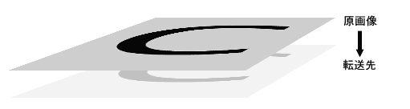

このworkは、クリエイティブ・コモンズ・ライセンスの下でライセンスされています。
実際ココまでは単なる準備段階。これでサンプルが作成できる様になりました。
それで、ここからが実際に解説するところの多いものなのですが、まず知っておくべきなのは画像処理のすべてはDoFilterRect関数の中で記述されていると言うことです。(ちなみに「DissolveWith.c」の内部で記述されています)
必要なメモリの確保等の処理はたいだいすべて他の関数で行われていて、普通やりたい範囲のことはこのDoFilterRect関数内部で記述することで解決が出来ます。
ここからは実際のコードを確認しながら作業を行っていきましょう。
PhotoShop内部でフィルタを適応するときは、元画像の他に転写先の画像の領域を作成してそちらに画像のデータを移しこんでいく方法をとります。これはPhotoShop独自の考えと言うよりは２次元画像処理全般に言える悟りの様なものです。
PhtoShop内部では画像の左上から横方向に順繰りに画像を操作していってそこのピクセルを取り出していきます
実際のコードでは
srcPtr = (unsigned8 *) gStuff->inData + (i * gStuff->inRowBytes);
dstPtr = (unsigned8 *) gStuff->outData + (i * gStuff->outRowBytes);
mskPtr = (unsigned8 *) gStuff->maskData + (i * gStuff->maskRowBytes);
の所で、一行ごとにアクセスを行って、
srcPtr += gStuff->inHiPlane - gStuff->inLoPlane + 1;
dstPtr += gStuff->planes;
mskPtr++;
の所で左隣のピクセルにそれぞれ移動しています。
ここまで分かった上で、何も仕事をしない、ただ画像を転写先へ移動させるフィルタを書きたい場合はDoFilterRect関数は次の様になります
/** フィルタの画像処理部分の本体 */
void DoFilterRect(GPtr globals, const Boolean doProgress){
short i, j;
short plane;
const short columns = gStuff->outRect.right - gStuff->outRect.left; // 横幅を整数で取得
const short rows = gStuff->outRect.bottom - gStuff->outRect.top; // 縦幅を整数で取得
const short total = gStuff->filterRect.bottom - gStuff->filterRect.top; // 全ピクセル数を取得
unsigned8 *srcPtr = (unsigned8 *) gStuff->inData;
unsigned8 *dstPtr = (unsigned8 *) gStuff->outData;
unsigned8 *mskPtr = (unsigned8 *) gStuff->maskData;
// 縦軸を移動する
for (i=0; i < rows; i++){
srcPtr = (unsigned8 *) gStuff->inData + (i * gStuff->inRowBytes);
dstPtr = (unsigned8 *) gStuff->outData + (i * gStuff->outRowBytes);
mskPtr = (unsigned8 *) gStuff->maskData + (i * gStuff->maskRowBytes);
// 横軸を移動する
for (j=0; j < columns; j++){
if (TestAbort ()){ // 必要に応じてフィルタを停止
gResult = userCanceledErr;
return;
}
// プログレスバーの進行具合を変化させる
if (doProgress)
UpdateProgress( (long)(gStuff->outRect.top + i)-gStuff->filterRect.top, ((long)total) );
// ここで画像をコピー
for (plane = 0; plane < gStuff->planes; plane++)
dstPtr[plane] = srcPtr[plane];
// それぞれのポインタを進行させる
srcPtr += gStuff->inHiPlane - gStuff->inLoPlane + 1;
dstPtr += gStuff->planes;
++mskPtr;
}
}
}
ここまでやるとシンプルにしすぎている気もしますが、分かりやすいのでまぁ良かったことにします。
実際に目に見える効果がほしいと思う人も多いと思いますので、何か効果を出してみます。
今回は画像処理の教科書でも比較的代表的で、しかも最初の方に載せられるという事でラプラシアンフィルタ(線抽出フィルタ)を書いてみましょう。
/** フィルタの画像処理部分の本体 */
void DoFilterRect(GPtr globals, const Boolean doProgress){
short i, j, k, l;
short plane;
const short columns = gStuff->outRect.right - gStuff->outRect.left; // 横幅を整数で取得
const short rows = gStuff->outRect.bottom - gStuff->outRect.top; // 縦幅を整数で取得
const short total = gStuff->filterRect.bottom - gStuff->filterRect.top; // 全ピクセル数を取得
unsigned8 *srcPtr = (unsigned8 *) gStuff->inData; // 原画像への参照
unsigned8 *dstPtr = (unsigned8 *) gStuff->outData; // 転写先への参照
unsigned8 *mskPtr = (unsigned8 *) gStuff->maskData; // マスクへの参照
unsigned8 *tPtr; // 上下左右のピクセルを参照するときに使う一時変数
int tmp[3]; // 上下左右のピクセルのRGBの値
// フィルタの変数
short f[3][3]={
{ -1, -1, -1},
{ -1, 8, -1},
{ -1, -1, -1}
};
// 縦軸を移動する
for (i=0; i < rows; i++){
srcPtr = (unsigned8 *) gStuff->inData + (i * gStuff->inRowBytes);
dstPtr = (unsigned8 *) gStuff->outData + (i * gStuff->outRowBytes);
mskPtr = (unsigned8 *) gStuff->maskData + (i * gStuff->maskRowBytes);
// 横軸を移動する
for (j=0; j < columns; j++){
if (TestAbort ()){ // 必要に応じてフィルタを停止
gResult = userCanceledErr;
return;
}
// プログレスバーの進行具合を変化させる
if (doProgress)
UpdateProgress( (long)(gStuff->outRect.top + i)-gStuff->filterRect.top, ((long)total) );
// 上下左右の端の部分は処理をスキップ
if( 1 < i && i < rows-1 && 1 < j && j < columns-1 ){
tmp[0]=tmp[1]=tmp[2]=0; // 値をまず0でリセット
for( k=-1; k<2; k++ ){
for( l=-1; l<2; l++ ){
tPtr = srcPtr + (gStuff->inHiPlane - gStuff->inLoPlane + 1)*(columns*k+l);
for (plane = 0; plane < 3; plane++)
tmp[plane] += f[k+1][l+1]*tPtr[plane];
}
}
for (plane = 0; plane < 3; plane++){
// 値を0～255の範囲に押さえる
tmp[plane] = (tmp[plane]>255)?255 : tmp[plane];
tmp[plane] = (tmp[plane]<0) ? 0 : tmp[plane];
// ここで値を代入
dstPtr[plane] = tmp[plane];
}
for (plane = 3; plane < gStuff->planes; plane++)
dstPtr[plane] = srcPtr[plane];
} else {
// ここで画像をコピー
for (plane = 0; plane < gStuff->planes; plane++)
dstPtr[plane] = srcPtr[plane];
}
// それぞれのポインタを進行させる
srcPtr += gStuff->inHiPlane - gStuff->inLoPlane + 1;
dstPtr += gStuff->planes;
++mskPtr;
}
}
}